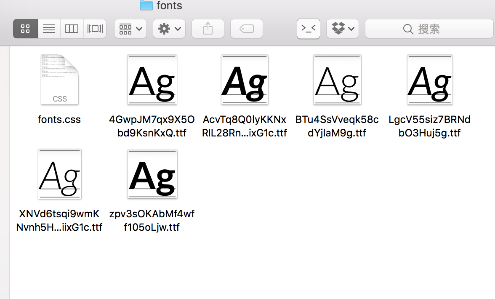
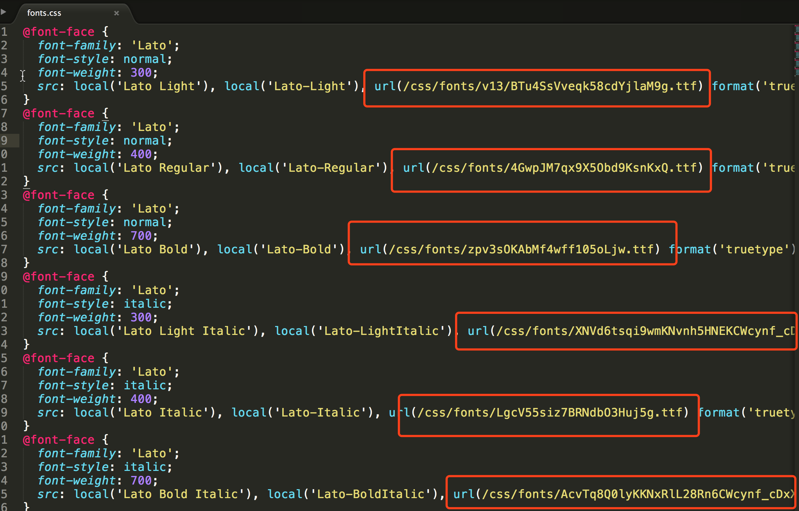

之前已经做过对 Blog 静态资源的优化，但是都没有进行记录，今天又做了一个比较实用的优化，赶紧记一下。
我打开 Chrome 的调试器进入站点时，看到 Network 里有一条访问 fonts.gstatic.com，这个请求应该是访问的 谷歌 CDN，但是国内的访问速度是非常不友好的，由于我平时都是开着 Surge 所以没什么感觉。
这个资源是在由主题渲染成静态站点时插入进来的，因为我用的是自己修改的 Next 模板，所以在 themes/next 目录下查找带 fonts.gstatic.com 关键字的文件竟然没有找到，很是费解。后来我又看那条请求，发现它的 referer 是 fonts.googleapis.com，所以我又尝试用这个关键字进行查找，最后在 themes/next/layout/_partials/head/external-fonts.swig 找到了它。
1 | {% if font_families !== '' %} |
然后我在网上找了找 fonts.googleapis.com 国内镜像，有两个用的比较多的：360网站卫士 和 中科大。但是一些地方写到 360网站卫士 提供的源不支持 HTTPS，虽然我的博客现在并不是 HTTPS 的，但保不齐以后我要改呢。所以我选择使用中科大镜像。只需用 fonts.lug.ustc.edu.cn 替代之即可。然后再 hexo g 重新生成下站点就可以了。
下边是几个常用的替代镜像：
- ajax.googleapis.com => ajax.lug.ustc.edu.cn
- fonts.googleapis.com => fonts.lug.ustc.edu.cn
- themes.googleusercontent.com => google-themes.lug.ustc.edu.cn
updateAt: 2017-06-20
然鹅，在我用了一段时间后，发现中科大的源速度我也不满意，最终将那个 css 文件包括 css 文件里边用到的 ttf 文件都下载到了本地，使用本地路径来路由，这样的话我部署到七牛后的速度比之前快了很多。

在 themes/next/source/css 下新建 fontes 目录，把 https://fonts.proxy.ustclug.org/css?family=Lato:300,300italic,400,400italic,700,700italic&subset=latin,latin-ext 下载到 fonts 目录并重命名为 fonts.css，然后把里边的 url 对应的 ttf 文件也都下载到此目录，并修改 fonts.css 内的 url 地址为本地地址:

最后将之前修改的 themes/next/layout/_partials/head/external-fonts.swig 文件中的地址改为：/css/fonts.css